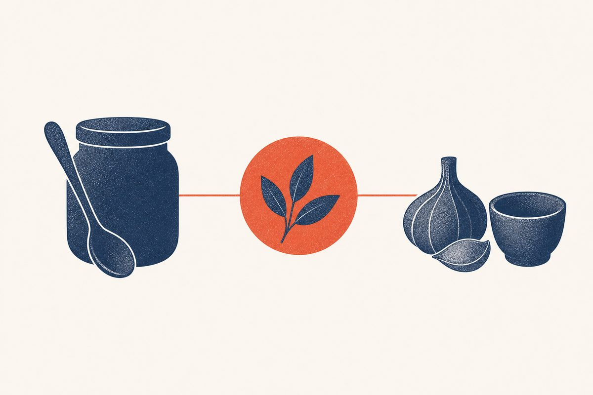

Key Takeaways
- Boric acid vaginal capsules are the one home-style remedy with real clinical evidence, for recurrent infection when standard azole treatment fails, not as routine first-line care.[1]
- Garlic and tea tree oil show laboratory activity but lack the clinical studies needed to recommend them,[10] and fresh raw garlic can cause chemical burns.[12]
- Probiotics added to antifungals may improve short-term cure, but the evidence is low or very low quality and showed no long-term benefit.[2]
- Over-the-counter antifungals (miconazole, clotrimazole) are the real self-treatment that works for uncomplicated infection.[4]
- First confirm the diagnosis: in one study, only about a third of self-diagnosed yeast infections were actually yeast.[5]
- Do not douche: a recent expert review advises against washing inside the vagina.[8]

Type almost any vaginal symptom into a search engine and you will be handed a buffet of home remedies: garlic, yogurt, tea tree oil, apple cider vinegar, coconut oil, boric acid. Some have a kernel of truth, most do not, and a few can cause harm. This guide sorts them out, starting from the evidence rather than from anecdote.
What Counts as a Home Remedy
For this guide, a home remedy is anything used to treat or prevent yeast infection without a prescription, whether it is a kitchen ingredient, a supplement, or an over-the-counter (OTC) product. The crucial distinction is that OTC antifungal medicines (miconazole, clotrimazole, tioconazole) are among the regimens CDC recommends, and azole treatment relieves symptoms and clears cultures in 80 to 90 percent of patients who complete it.[4] By contrast, a systematic review rated the evidence for common complementary remedies for vaginitis as poor in quality.[10]
The First Step: Confirm It Is Yeast
Before any remedy, the highest-value move is to be sure the problem is actually a yeast infection. In a study of 95 women who bought an OTC antifungal for a self-diagnosed yeast infection, only about 34 percent actually had one; the others had bacterial vaginosis, a mixed infection, another diagnosis, or a normal exam.[5] Every home remedy, no matter how safe, is wasted effort and days of symptoms if the real problem is something else.
A past diagnosis helps less than people expect: in that study, women who had been diagnosed with a yeast infection by a clinician before were no more accurate at self-diagnosis.[5] CDC advises that anyone whose symptoms persist after an OTC product, or return within 2 months of treatment, be evaluated and tested.[4] For a first episode, unusual symptoms, odor, pelvic pain, or fever, see a clinician first.
When Self-Treatment Is Reasonable
| Situation | Action |
|---|---|
| Past clinician-diagnosed infection, same symptoms, not pregnant | An over-the-counter azole is an option, but a past diagnosis does not make self-diagnosis reliable[5] |
| Pregnancy | See a clinician before treating; CDC recommends only 7-day topical azoles in pregnancy[4] |
| Symptoms persist after an OTC product, or return within 2 months | Stop self-treatment and get evaluated and tested[4] |
Boric Acid: The Exception
Boric acid is the one home-style remedy with genuine clinical backing, and even then it is not for routine first-line use. A systematic review concluded that boric acid is a safe, alternative option for women with recurrent and chronic symptoms when conventional treatment fails because of non-albicans Candida species or azole-resistant strains.[1] For non-albicans infection that recurs after a longer course of a non-fluconazole azole, CDC's 2021 guideline lists 600 mg of boric acid in a gelatin capsule, inserted vaginally once daily for 3 weeks, with clinical and mycologic eradication rates of about 70 percent.[4]
That review identified 14 studies, mostly case series, and reported mycologic cure rates with boric acid ranging from 40 to 100 percent. Reported side effects included a vaginal burning sensation in under 10 percent of cases, watery discharge, and vaginal redness.[1]
Important caveats: boric acid capsules are for vaginal use only;[4] swallowing large amounts of boric acid causes serious poisoning, including kidney failure and delirium;[15] and boric acid is not for use in pregnancy, where it is contraindicated because of a lack of safety data.[8][3] CDC recommends only 7-day topical azoles during pregnancy.[4] Boric acid is best used under a clinician's guidance, after other causes of symptoms have been excluded and the yeast species confirmed by culture.[4]
Yogurt and Probiotics
The idea is appealing: replace the disrupted vaginal flora with the lactobacilli found in yogurt. The reality is more modest. CDC states that no substantial evidence supports using probiotics or homeopathic medications to treat a yeast infection.[4]
A Cochrane review of 10 randomized trials in non-pregnant women, all using probiotics alongside antifungal drugs, found that probiotics increased short-term clinical and mycological cure and lowered relapse at one month, but the evidence was low or very low quality and the benefit did not carry through to long-term cure. The review excluded women with recurrent infection.[2] In a cohort of women with recurrent infection on maintenance antifungal therapy, consuming acidophilus-containing products was associated with more recurrences, not fewer.[7] In other words, a probiotic is at best a modest adjunct to real antifungal therapy, never a substitute.
Garlic
Garlic is effective against Candida in the laboratory, and this fuels its folk reputation. But in a randomized, placebo-controlled trial of 63 women colonized with Candida, garlic tablets taken by mouth for 14 days did not reduce vaginal yeast counts or vaginal symptoms, and the garlic group reported more side effects.[11] An earlier systematic review concluded that the lack of clinical studies precluded recommending garlic.[10] Fresh raw garlic used on the body can cause severe skin irritation and chemical burns,[12] so inserting a clove vaginally is best avoided.
Tea Tree Oil
Tea tree oil has shown laboratory potential for treating vaginitis, but a systematic review found that the lack of clinical studies precluded recommending it.[10] Some people develop redness or irritation of the skin from topical tea tree oil products, and tea tree oil should never be swallowed, because taken by mouth it can cause serious symptoms such as confusion and coma.[13] It is not a substitute for a proven antifungal.
Coconut Oil and Apple Cider Vinegar
Coconut oil inhibited Candida isolates in a laboratory study,[14] and it is sometimes suggested as a topical soother, but laboratory results do not show that it clears a yeast infection in people, and it should not replace proven treatment.
Apple cider vinegar is not among the treatments CDC recommends for yeast infection.[4] It is often suggested as a douche, and douching with vinegar or anything else is not recommended: a systematic review advised against douching for vaginitis because of its risks without documented benefit,[10] and a recent expert review advises against washing inside the vagina.[8]
Evidence at a Glance
| Remedy | Evidence | Verdict |
|---|---|---|
| Boric acid capsules (600 mg) | Small trials and case series, for resistant or recurrent infection[1] | Supported for specific situations only |
| OTC azoles (miconazole, clotrimazole) | Guideline-recommended; 80 to 90 percent response[4] | Supported for uncomplicated infection |
| Probiotics (adjunct) | Low or very low quality[2] | Possible modest helper only |
| Tea tree oil | Laboratory studies only[10] | Not recommended |
| Coconut oil | One laboratory study[14] | Not supported |
| Yogurt applied vaginally | No substantial evidence for probiotics as treatment[4] | Not supported |
| Garlic inserted vaginally | Oral garlic did not work in a trial[11] | Avoid, raw garlic can burn[12] |
| Apple cider vinegar / douching | No documented benefit from douching[10] | Avoid |
The Home Treatment That Works: OTC Antifungals
The most reliable thing you can do at home for an uncomplicated yeast infection is also the one people often overlook because it does not sound like a natural remedy: use an over-the-counter antifungal. CDC lists over-the-counter vaginal miconazole, clotrimazole and tioconazole products, in courses from a single application to 7 to 14 days, among its recommended regimens, alongside a single 150 mg oral dose of fluconazole; azole treatment relieves symptoms and clears cultures in 80 to 90 percent of patients who complete therapy.[4] A recent expert review describes single-dose oral fluconazole and the vaginal azole creams and suppositories as having similar efficacy.[8]
For a first or recurring episode, or when symptoms are severe, a clinician can confirm the diagnosis and, if indicated, prescribe the oral option fluconazole. See the yeast infection guide and the fluconazole guide for the full treatment picture.
Prevention Habits That Help
Prevention advice is built on recognized risk factors for yeast infection.[6][8] Commonly advised habits include:
- Use antibiotics only when genuinely needed, since antibiotic use is a recognized risk factor[6][8]
- Keep blood sugar well controlled if you have diabetes, since uncontrolled diabetes is a recognized risk factor[6][8]
- Avoid douching and feminine washes and sprays[8]
- Wear cotton underwear and avoid tight or synthetic clothing, which can trap heat and moisture[8]
- Do not treat sex partners, as data do not support it[4]
For women who already have recurrent infection, weekly fluconazole has trial evidence: in a randomized trial, 90.8 percent of women taking it for six months were still disease-free at 6 months, compared with 35.9 percent on placebo, although many relapsed after it stopped.[9] None of these home remedies should replace it.
Safety Check on Common Remedies
| Remedy | Main concern |
|---|---|
| Boric acid | Vaginal use only; swallowing large amounts is poisonous; not for use in pregnancy[4][15][8] |
| Garlic (vaginal) | Fresh raw garlic can cause severe irritation and chemical burns[12] |
| Tea tree oil | Skin redness or irritation; never swallow[13] |
| Apple cider vinegar / douching | Douching is not recommended; no documented benefit[10] |
Red Flags
Stop home treatment and see a clinician if symptoms persist after an OTC product or return within 2 months,[4] if you develop odor, pelvic pain, fever, or bleeding, if you are pregnant, or if infections keep coming back. Recurrent infection can be linked to frequent antibiotic use or diabetes, although most women with it have no clear cause,[4] and the first step is to identify and address any reversible causes, with testing to confirm the diagnosis, rather than another round of remedies.[8] For recurring infection, see the recurrent yeast infection guide.
Frequently Asked Questions
Boric acid vaginal capsules have clinical evidence for recurrent infection when standard treatment fails because of non-albicans or azole-resistant yeast.[1] CDC lists 600 mg vaginally once daily for 3 weeks for recurrent non-albicans infection.[4] They are not for routine first-line use, must never be swallowed,[15] and are contraindicated in pregnancy.[8] Use them under a clinician's guidance.
The most reliable at-home treatment for an uncomplicated infection is an over-the-counter antifungal (miconazole or clotrimazole); CDC notes that short topical courses of 1 to 3 days are effective.[4] A single 150 mg oral dose of fluconazole is also a recommended option,[4] and an expert review describes the two approaches as having similar efficacy.[8]
The evidence is weak. A Cochrane review found that probiotics added to antifungal treatment lowered relapse at one month on very low quality evidence, with no clear long-term benefit,[2] and one cohort of women with recurrent infection linked acidophilus-containing products to more recurrences.[7] Probiotics cannot replace treatment.
Coconut oil inhibited Candida in a laboratory study,[14] but laboratory results do not show that it clears an infection in people, and it should not replace proven treatment.
For most adults with uncomplicated infection, OTC miconazole and clotrimazole are recommended and effective. Topical agents usually cause no systemic side effects, although local burning or irritation can occur, and the oil-based creams and suppositories might weaken latex condoms and diaphragms.[4] The main risk is treating a condition you do not actually have, so confirm the diagnosis, especially for a first episode.[5]
References
- Iavazzo C, Gkegkes ID, Zarkada IM, Falagas ME. Boric acid for recurrent vulvovaginal candidiasis: the clinical evidence. J Womens Health (Larchmt). 2011;20(8):1245-1255. doi:10.1089/jwh.2010.2708
- Xie HY, Feng D, Wei DM, et al. Probiotics for vulvovaginal candidiasis in non-pregnant women. Cochrane Database Syst Rev. 2017;11(11):CD010496. doi:10.1002/14651858.CD010496.pub2
- Akinosoglou K, Livieratos A, Asimos K, et al. Fluconazole-Resistant Vulvovaginal Candidosis: An Update on Current Management. Pharmaceutics. 2024;16(12):1555. doi:10.3390/pharmaceutics16121555
- Centers for Disease Control and Prevention. Vulvovaginal Candidiasis. Sexually Transmitted Infections Treatment Guidelines, 2021. Page last reviewed July 22, 2021. Accessed November 7, 2026. cdc.gov/std/treatment-guidelines/candidiasis.htm
- Ferris DG, Nyirjesy P, Sobel JD, et al. Over-the-counter antifungal drug misuse associated with patient-diagnosed vulvovaginal candidiasis. Obstet Gynecol. 2002;99(3):419-425. doi:10.1016/s0029-7844(01)01759-8
- Gonçalves B, Ferreira C, Alves CT, et al. Vulvovaginal candidiasis: Epidemiology, microbiology and risk factors. Crit Rev Microbiol. 2016;42(6):905-927. doi:10.3109/1040841X.2015.1091805
- Patel DA, Gillespie B, Sobel JD, et al. Risk factors for recurrent vulvovaginal candidiasis in women receiving maintenance antifungal therapy: results of a prospective cohort study. Am J Obstet Gynecol. 2004;190(3):644-653. doi:10.1016/j.ajog.2003.11.027
- Rautemaa-Richardson R, Sobel JD, Stone N, et al. State-of-the-Art Review: Managing Vulvovaginal Candidiasis. Clin Infect Dis. 2026;82(3):371-382. doi:10.1093/cid/ciaf673
- Sobel JD, Wiesenfeld HC, Martens M, et al. Maintenance fluconazole therapy for recurrent vulvovaginal candidiasis. N Engl J Med. 2004;351(9):876-883. doi:10.1056/NEJMoa033114
- Van Kessel K, Assefi N, Marrazzo J, Eckert L. Common complementary and alternative therapies for yeast vaginitis and bacterial vaginosis: a systematic review. Obstet Gynecol Surv. 2003;58(5):351-358. doi:10.1097/01.OGX.0000068791.04785.8D
- Watson CJ, Grando D, Fairley CK, et al. The effects of oral garlic on vaginal candida colony counts: a randomised placebo controlled double-blind trial. BJOG. 121(4):498-506. Published online December 6, 2013. doi:10.1111/1471-0528.12518
- National Center for Complementary and Integrative Health. Garlic: Usefulness and Safety. Last updated February 2025. Accessed November 7, 2026. nccih.nih.gov/health/garlic
- National Center for Complementary and Integrative Health. Tea Tree Oil: Usefulness and Safety. Last updated April 2025. Accessed November 7, 2026. nccih.nih.gov/health/tea-tree-oil
- Ogbolu DO, Oni AA, Daini OA, Oloko AP. In vitro antimicrobial properties of coconut oil on Candida species in Ibadan, Nigeria. J Med Food. 2007;10(2):384-387. doi:10.1089/jmf.2006.1209
- Webb DV, Stowman AM, Patterson JW. Boric acid ingestion clinically mimicking toxic epidermal necrolysis. J Cutan Pathol. 40(11):962-965. Published online September 2, 2013. doi:10.1111/cup.12205